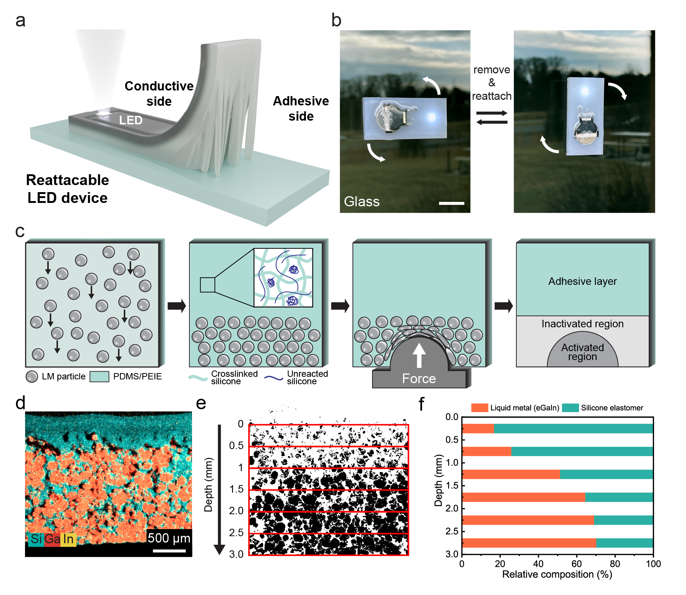

1. Why the composite question appears so quickly
Liquid metal becomes exciting very quickly in the literature because it can conduct, deform, flow, and sometimes recover from damage in ways that rigid conductors cannot. However, exactly those strengths make it difficult to stabilize in practical form. A liquid that moves easily can also spread where it should not spread. A conductive phase that is highly mobile can also disconnect or coalesce in uncontrolled ways. A soft conductor that looks ideal in a single demonstration may still be hard to package, pattern, or recycle. Composite design enters the field because it turns these raw strengths into a controlled system.
The major composite reviews make this point from slightly different angles, but they converge on the same engineering logic. Liquid metal is best understood not as a standalone answer but as a phase whose function depends on what surrounds it. Shells control the interface. Polymers create structure, elasticity, and confinement. Solid particles introduce conductivity enhancement, magnetic behavior, catalytic sites, or shielding mechanisms. Once students see composites in this way, the field stops looking like a random collection of exotic materials and starts looking like a disciplined exercise in architecture.
2. Core-shell systems: when the interface is the main design site
Core-shell liquid-metal systems are especially important because they teach students that the droplet surface is not a passive boundary. It can be engineered into an active layer that stabilizes the droplet, prevents sticking, supports particle adsorption, modifies wetting, or participates in a chemical reaction. This is why the interface repeatedly appears in discussions of catalysis, droplet motion, surface functionalization, and patterning. The shell is often thin, but the effect can be decisive.
What makes this route valuable is that it does not require the researcher to eliminate the liquid character of the core. Instead, the shell allows the liquid phase to be preserved while selected weaknesses are reduced. In some cases, the shell helps isolate the liquid metal from the environment. In other cases, it acts as a bridge to another material system. The broader lesson is that composite design can be subtle. A composite is not always a bulk mixture. Sometimes the most important composite feature is an interface only a short distance thick.
3. Polymer-based composites: where most soft-device thinking becomes practical
Liquid metal-polymer composites are central because polymers provide what a fluid alone cannot: persistent shape, elastic recovery, damage tolerance, and a processable host. The polymer does not merely contain the liquid metal. It determines the mechanical identity of the device. Meanwhile, the liquid-metal phase provides transport and a way to preserve function during deformation. This is why liquid metal-polymer systems repeatedly appear in soft circuits, strain-tolerant conductors, thermal interface materials, and self-healing concepts.
At the same time, this route brings one of the field’s core difficulties into view. Liquid metal does not automatically disperse uniformly or remain stable in a polymer matrix. Droplet size, oxide chemistry, mixing energy, surface modification, and curing conditions all matter. The literature shows again and again that “liquid metal added to polymer” is not yet a finished material design. The actual challenge is to decide how dispersed the droplets should be, whether they must remain isolated or become percolated, and what activation step will convert the dispersed state into a functional electrical path.
The regenerative soft-electronics case study is especially useful here. It shows that a polymer matrix can do more than passively host liquid metal. In that work, the matrix enabled reprocessing, while local embossing converted initially isolated droplets into conductive networks only where circuitry was desired. That is a valuable design lesson for students. Function was not obtained from composition alone. It was obtained from the sequence of dispersion, confinement, activation, and later reconfiguration.


4. Particle and hybrid composites: the route toward multifunctionality
Particle-filled and hybrid liquid-metal composites show how quickly the field expands once additional mechanisms are invited into the system. Conductive particles can change network formation and electrical behavior. Magnetic particles can introduce field response and magnetic loss. Ceramic or catalytic phases can create thermal, chemical, or reactive functions. In other words, once particles are introduced, the composite stops being only a soft conductor and becomes a multifunctional engineered material.
This logic is especially clear in electromagnetic shielding research. Shielding is not achieved by conductivity alone. It depends on how electromagnetic waves are reflected, absorbed, scattered, or dissipated across a structured medium. That is why the shielding review organizes the field into monolithic liquid-metal frameworks, blends with conductive fillers, magnetic-particle composites, and architectured multifunctional systems. Each route represents a different strategy for controlling electromagnetic behavior while preserving the mechanical advantages that make liquid metal attractive in the first place.
5. What students should learn before attempting a composite design
Before proposing a new liquid-metal composite, students should ask a sequence of practical questions. Is the target function electrical, thermal, magnetic, catalytic, or shielding-related? Must the liquid-metal phase remain mobile, or should it be activated into a network only after processing? Does the surrounding matrix mainly provide elasticity, interfacial stability, spatial confinement, or end-of-life reprocessability? Is the synthesis route physical, chemical, or a combination of both? Most weak composite ideas fail because these questions are answered too late or only implicitly.
The best reading of the field is therefore not “what filler can I add next?” but “what limitation of pure liquid metal am I solving, and what new limitation does my composite create in return?” That tradeoff mindset is essential. A composite that improves one property may worsen processability, repeatability, or long-term stability. Mature liquid-metal research is increasingly defined by how clearly those tradeoffs are managed.
6. Outlook for composite research
The outlook that emerges from the composite papers is not simply a search for more filler combinations. The more interesting direction is tighter control over interfaces and activation pathways. Researchers want composites that disperse reproducibly, form networks only when and where desired, survive repeated damage, and remain manufacturable at useful scales. Shielding studies add another layer, showing that multifunctionality will matter increasingly: the same composite may need to carry current, endure strain, spread heat, and manage electromagnetic noise within one platform.
That is why composite research remains strategically important for new students. It sits at the point where fundamental liquid-metal behavior is forced to meet real engineering constraints. The best future work will likely be the work that treats interface control, process scale-up, and end-of-life reusability as part of one design problem rather than as separate afterthoughts.